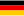
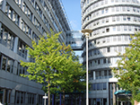
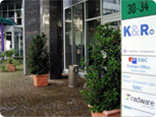
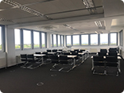
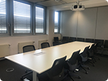
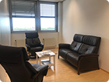
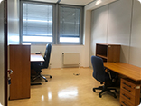

지역별 소개 및 신청


 독일 수출BI 프랑크프루트
프랑크푸르트 수출인큐베이터는 2000년 4월 유럽에 진출하는 국내 중소기업의 현지 조기정착을 용이케하고, 이를 통하여 유럽시장 수출 및 판로확대를 위하여 독일 프랑크푸르트 인근 Eschborn에 설립되었습니다.
입지여건
-
유럽 중앙에 위치한 EU 최대 시장
- 유럽 9개 국가를 국경에 두고 서유럽 중앙에 위치
- 27개국 5억 360만명(’ 12년)의 인구를 가진 단일시장 EU 회원국가 중 최대인구(8200만명), 최대시장, 최대 교역규모
- 미국, 중국, 일본에 이어 세계 4대 경제규모
- 중국과 함께 세계 2대 수출국가 : 국내 GDP ¼차지지, 세계무역의 9% 차지
- 세계 500대 기업 및 45,000여개 외국기업 소재
-
중동구시장 진출의 거점
- 중동구로 확장되는 EU의 지정학적 중심에 위치하고 있으며 중동구 4개국의 최대 교역 파트너(헝가리, 체코, 폴란드, 슬로베니아 총교역의 30% 차지)
- EU국가 중 對 중동구 최대 투자국(각국 투자유치액의 평균 25% 이상)
-
유럽 물류의 중심지
- 12,200Km의 고속도로, 43,800Km의 철도, 7,500Km의 수로가 동서남북을 연결함으로써 유럽 내 최고의 물류 인프라 구축
- 유럽에서 가장 많은 화물을 운송하는 프랑크푸르트 공항 보유
-
전시회를 통한 시장진입 용이
전시면적이 세계전시장 총규모의 20% 차지하고 있으며 세계 30대 전시장 중 8개가 독일에 소재
-
독일에서 통하면 EU에서도 OK
독일업체와 거래관계를 형성하여 Reference가 생기면 EU 내 어느 국가에서도 판매가능하고 일단 진입에 성공하면 지속적인 거래관계 유지 가능
진출 유망 사업 분야
- 가전제품, 네비게이터, 위성방송용 수신기, 통신장비용 부품, 핸드폰, 컴퓨터 및 주변기기, 모니터, IT관련 제품, 자동차부품, 공작기계, 의료장비, 잡화 등
입주면적/주요시설
- 총면적 845.38㎡
- 입주업체 사무실 1인실(약 15㎡~18㎡) 8실, 2인실(약 21㎡) 4실, 3~4인실(약 27㎡~35㎡) 4실
- 회의실(8석 규모) 1실(바이어 미팅등)
- 소회의실(6석 규모) 1실(바이어 미팅 등), 제품전시 공간 포함 추가
- 중소기업 수출사랑방 1실(각2명씩 동시이용 가능)
- 기타 공용실 간이상담실, 휴게실, 탕비실, 임시창고 등
입주부담금
-
수출인큐베이터
- 입주보증금 : 500만원
- 월 임차료(1년차 기준) : 14만원 내외
- 실비부담 : 전기료, 인터넷 사용료, 전화료, 팩스 사용료, 냉난방비 - 공유오피스 : 무료
찾아오시는 길
-
택시 이용시
- 요금은 약 30~35유로로 25분 내외 소요
- 기사에게 Ludwig-Erhard-Str.30-34, Eschborn (루트비히 에아하트 슈트라세 30-34, 에쉬본) 또는 Industrie Str. 30, Eschborn(인두스트리 슈트라세 30, 에쉬본) 이라고 말씀하시면 됩니다.
-
버스 이용시
- 요금은 편도 4.10유로(4구간 요금)로 1시간 내외 소요
- 공항 Terminal 1에서 수출인큐베이터까지는 58번 버스(방향 Eschborn-West)를 타시고 종점에서 하차 하시면 바로 앞까지 도착 합니다. 단, 버스 운행이 자주 있지 않으므로 공항 버스정류장에서 운행시 간을 확인하셔야 합니다.
-
전철 이용시
- 요금은 4.10유로(4구간 요금)로 1시간 내외 소요
- 공항에서 수출인큐베이터까지는 S-Bahn이라고 불리는 전철이 있으며, 공항 Terminl 1 지하에 있습니다.
KAL로 입국하시는 분들은 공항 Termainl 2로 들어오시므로, Terminl 1으로 이동하셔야 합니다.
Asiana 또는 Lufthansa로 입국하시는 분들은 Terminl 1으로 바로 입국 하십니다.
S8 또는 S9(우리나라로 말하면, 지하철 8호선, 9호선) 중 City 또는 Hanau방면을 선택하시어, Hauptbahnhof
(중앙역)까지 가신 후(공항에서 전철로 7분), Hauptbahnhof에서 Eshborn역까지 오는 S3 또는 S4로 갈아
타시기 바랍니다. 이 때 S3는 Bad Soden방향, S4는 Kronberg방향 입니다.
Haubtbahnhof에서 Eschborn까지는 전철로 약 14분 정도 소요 됩니다.
단, 전철 기다리는 시간이 꽤 소요되므로 유의하시기 바랍니다.
공항입국(Terminl 1 또는 2) ⇒ S-bahn 8 또는 9 이용(Terminl 1 지하) ⇒ Hauptbahnhof(중앙역 하차) ⇒
S-bahn 3 또는 4로 환승 ⇒ Eschborn 역 하차 ⇒ Ludwig-Erhard-Str. 방면으로 도보 15분
시설사진

건물전경
건물입구
대회의실

소회의실
사무실
수출사랑방
라운지
위치
 주소|
Frankfurt Ludwig-Erhard-Str.30~34, D-65760,Eschborn, GERMANY
주소|
Frankfurt Ludwig-Erhard-Str.30~34, D-65760,Eschborn, GERMANY
담당자
- 이혜룡 소장
- 전화: +1-201-676-2416
- 팩스: +1-201-944-3990
- 이메일: lhr6785@kosmes.or.kr